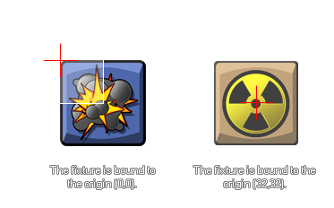

physics_fixture_bind
This function binds a fixture to an instance.
Syntax :
physics_fixture_bind(fixture, target)
| Argument | Description |
|---|---|
| fixture | the fixture that is to be bound |
| target | the target instance that is to receive the fixture (can be an instance id, an object id, other, or all) |
Returns: N/A
Description
Once we have defined our fixture it has to be bound to an instance. This means that its properties are transfered to the selected instance, not the actual fixture itself, so that one fixture can
be bound to multiple instances if all are to have the same properties. You can specify an object index for the target and all instances present in the room at the time will receive that fixtures properties (but not
any new instances of the object created later), or you can use the special keywords other and all. You can even specify a parent object and all children instances with that parent will also receive
the fixture. Once the fixture has been bound to all the instances that you need, it can be deleted if no longer necessary and the instances with that fixtures properties will not be affected and maintain those
properties.
If the fixture you are binding is a box (rectangle) or circle shape, then it will be bound to the instance with the center of mass being positioned at the origin of the instance, and polygon fixtures are bound based on
the position of the points relative to the origin.

Note : Fixtures should be removed when no longer needed as failure to do so may cause a memory leak which will slow down and eventually crash your game.
Example :
var fix, inst;
fix = physics_fixture_create();
physics_fixture_set_circle_shape(fix, 16);
physics_fixture_set_density(fix, 1.0);
inst = instance_create(x, y, genericBodyObject);
physics_fixture_bind(fix, inst);
physics_fixture_delete(fix);
The code above will create a fixture and assign its index to the variable "fix". It then defines the shape and density of the fixture before binding it to the instance that was created with the index stored in the variable "inst". Finally, the fixture is deleted to prevent memory leaks as it is no longer needed.